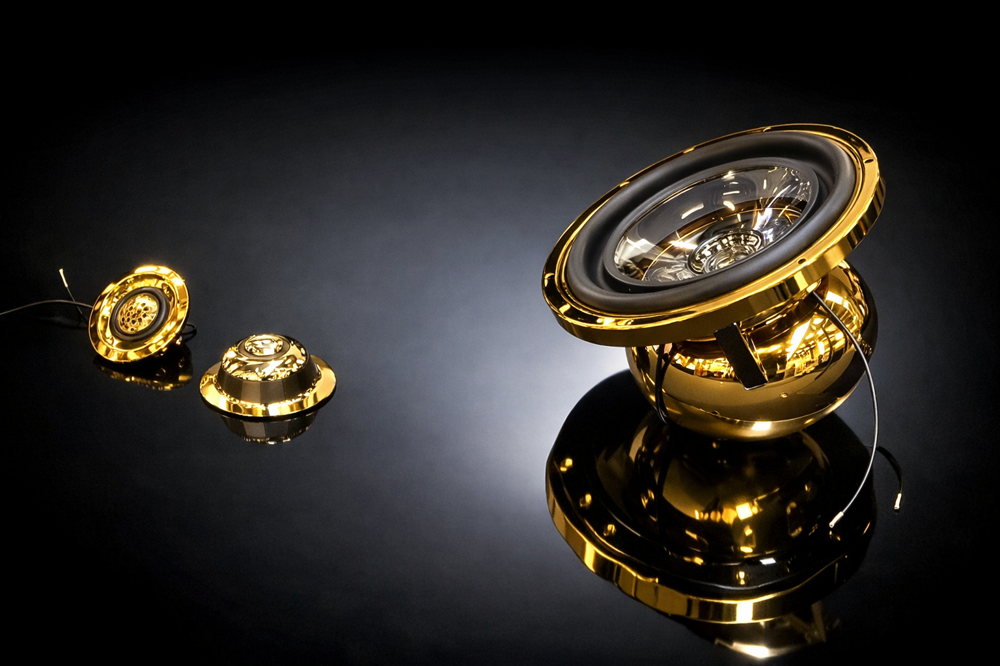
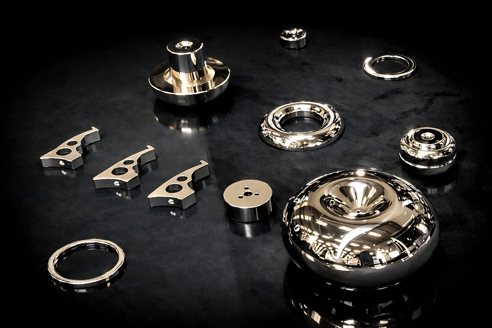

01 — Philosophy
Engineering Without Compromise
We do not sell speakers. We enter into a partnership.
01 — Philosophy
We do not sell speakers. We enter into a partnership.
Every audio company on the market will sell you a speaker. You visit a website, you select a model, you enter a credit card number, and two days later a box arrives. The transaction is complete. The relationship is over.
KREA does not work this way. We do not sell speakers. We enter into a partnership with the people who will use them.
Before a single component is committed to production, we need to know who you are. What you are building. The vehicle. The acoustic environment. The objective. This is not bureaucracy. It is the foundation of everything that follows.
A speaker sold without this information is a generic product. A KREA exists for a specific purpose, in a specific place, for a specific person. Without knowing all three, it cannot exist.

Not a form. A conversation. Before we begin, we need to understand what you are building. This is not an order process. It is the first step in a relationship that will define how your system sounds for years to come.
We receive your technical documentation — the vehicle, the target installation position, the available acoustic volume, the installation angle, the amplifier specifications, and the intended crossover point. From this data, the electromechanical identity of your transducer is calculated.
Resonant frequency. Compliance. Moving mass. Force factor. Every Thiele-Small parameter is optimized for your specific acoustic environment. This is not a suggestion. It is the only way to guarantee the result.

Performance is guaranteed not by satisfaction surveys, but by measurable, verifiable acoustic results — verified with equipment, not assumptions.
Every KREA transducer is the result of a process that begins with listening — not to music, but to the owner. Understanding what they want. Understanding what the installation demands. And then engineering a solution that satisfies both.
Just listen.
